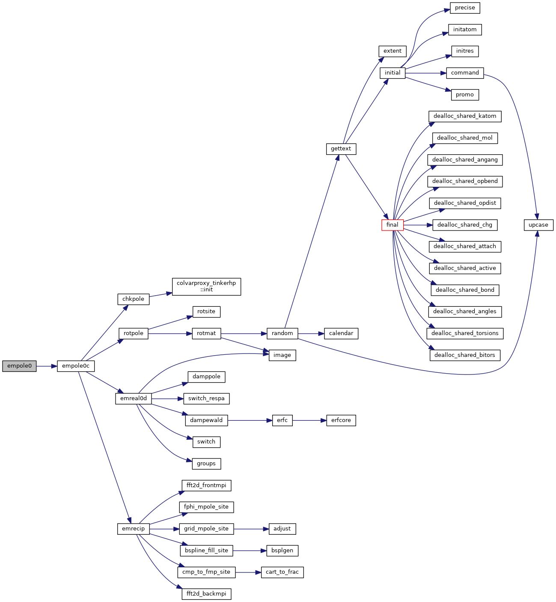
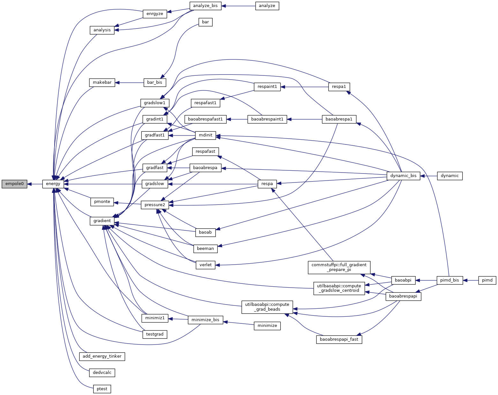
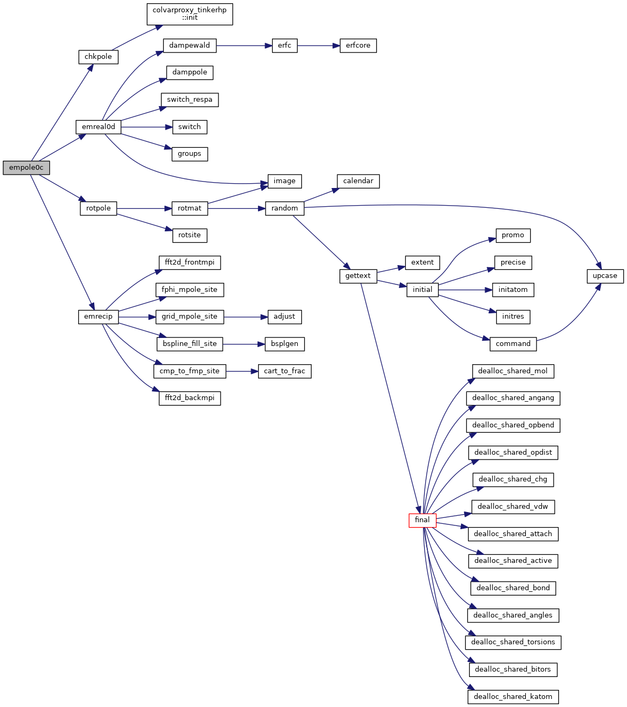
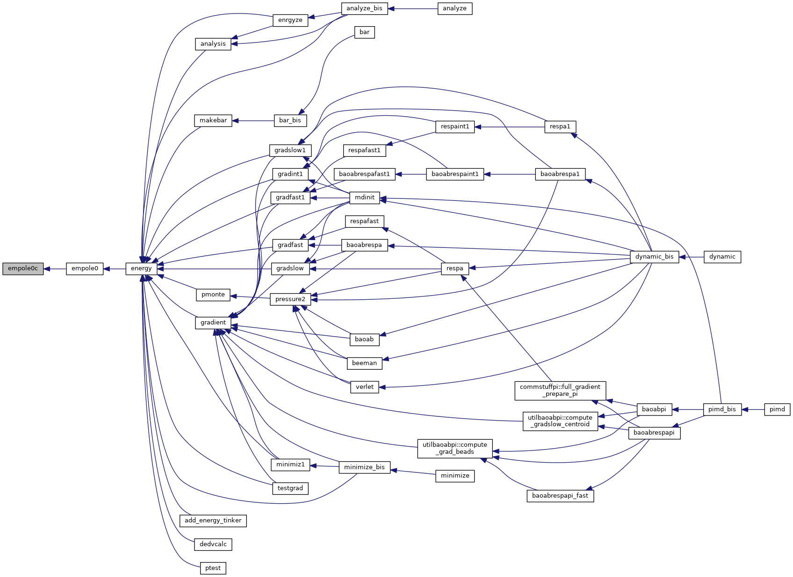
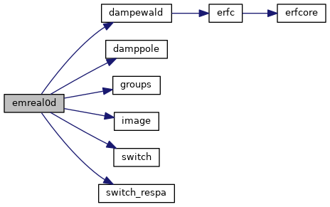
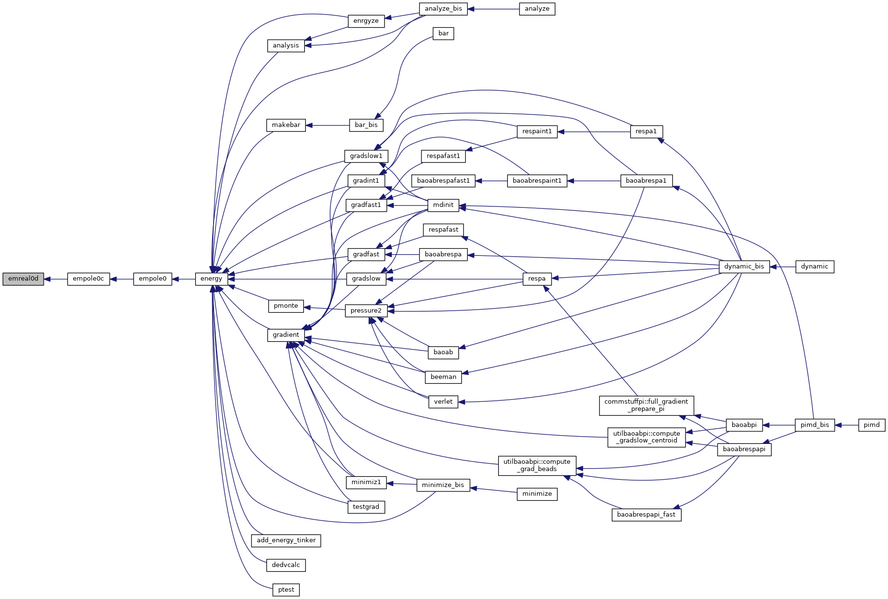

|
Tinker-HP v1.3
|
|
Tinker-HP v1.3
|
Go to the source code of this file.
Functions/Subroutines | |
| subroutine | empole0 |
| calculates the electrostatic energy due to atomic multipole and dipole polarizability interactions More... | |
| subroutine | empole0c |
| calculates the atomic multipole interaction energy using particle mesh Ewald summation and a neighbor list More... | |
| subroutine | emreal0d |
| evaluates the real space portion of the Ewald sum energy due to atomic multipoles using a neighbor list More... | |
| subroutine empole0 | ( | ) |
calculates the electrostatic energy due to atomic multipole and dipole polarizability interactions
| no | params |
Definition at line 21 of file empole0.f90.
References empole0c().
Referenced by energy().


| subroutine empole0c | ( | ) |
calculates the atomic multipole interaction energy using particle mesh Ewald summation and a neighbor list
| no | params |
Definition at line 52 of file empole0.f90.
References chkpole(), emreal0d(), emrecip(), and rotpole().
Referenced by empole0().


| subroutine emreal0d | ( | ) |
evaluates the real space portion of the Ewald sum energy due to atomic multipoles using a neighbor list
| no | params |
Definition at line 201 of file empole0.f90.
References dampewald(), damppole(), groups(), image(), switch(), and switch_respa().
Referenced by empole0c().


 1.8.5
1.8.5